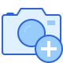
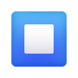
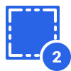
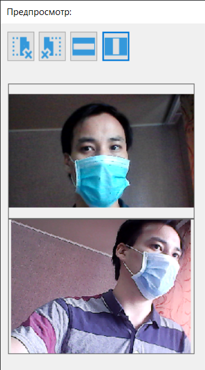
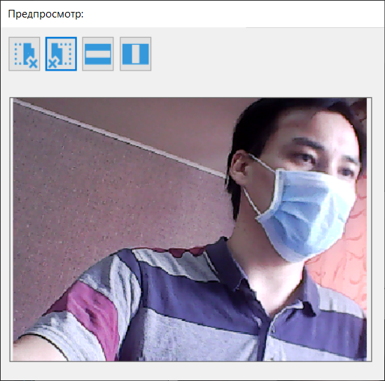
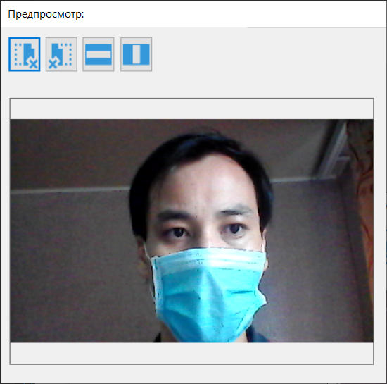
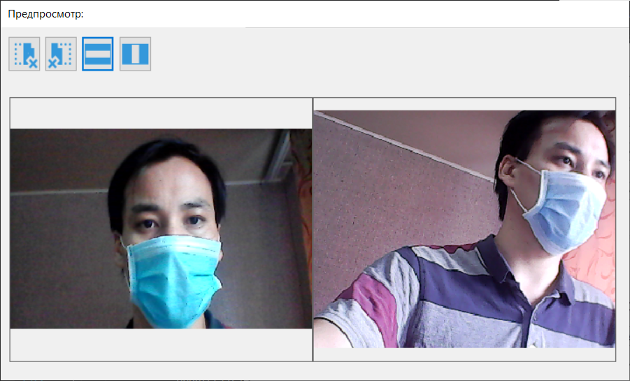
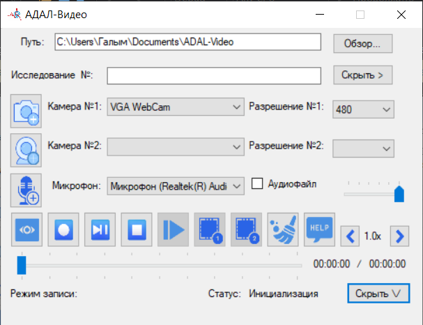

Интерфейс пользователя программы АДАЛ-Видео

Путь для сохранения файлов по умолчанию Документы\ADAL-Video. Этот путь создается и выбирается в программе автоматически.
При необходимости можно изменить при помощи кнопки Обзор…
В строку Исслед. № вводится уникальное имя (например: номер исследования, имя исследуемого и тому подобное). Эта строка прикрепляется к имени видеофайла.
Камера №1: позволяет выбрать камеру из списка возможных.
Камера №2: позволяет выбрать камеру из списка возможных.
Аудиовход: позволяет выбрать микрофон из списка возможных.
Разрешение №1: позволяет выбрать разрешение для Камеры №1.
Разрешение №2: позволяет выбрать разрешение для Камеры №2.
Режим записи: отображает текущий режим записи из следующих возможных: Только аудио, Одна камера, Две камеры.
Режим записи выставляется автоматически, исходя из выбранных устройств в пунктах Камера №1, Камера №2 и Аудиовход.
Статус: отображает текущий статус программы из следующих возможных: Инициализация, Идет запись…, Быстрая запись, Воспроизведение, Пауза, Остановлено.
Предпросмотр позволяет просмотреть видео с выбранных камер без записи файла.
Записать аудиофайл записывает отдельный аудиофайл
Полоса прокрутки позволяет перейти на нужный момент видео. Справа отображаются текущее время и общая длительность файла.
Быстрая запись на первую камеру
Быстрая запись на вторую камеру
Быстрая запись на микрофон
Очищает окно настроек, обнуляя пункты Камера №1, Камера №2 , Разрешение №1, Разрешение №2.
Запись с выбором режима записи
Пауза/Продолжить
 Стоп останавливает запись или воспроизведение
Сделать скриншот с первой камеры
 Сделать скриншот со второй камеры
Покадровый просмотр видео
Перейти по таймкоду на нужное время видеофайла. Время указывается в секундах в поле ввода справа.
Уменьшить скорость воспроизведения. Минимально возможная скорость воспроизведения: 0,25х.
Увеличить скорость воспроизведения. Максимально возможная скорость воспроизведения: 4х.
Вызов справки и инструкции пользователя.
Оповещение о подключении USB устройства
Оповещение об отключении USB устройства
При предпросмотре, записи и воспроизведении появляется отдельное окно для отображения видео. Текущий статус показан в левом верхнем углу.
Имеется возможность изменить размеры окна, расположение видео и скрывать видео.
Закрыть левое окно
Закрыть правое окно
Расположить окна горизонтально
Расположить окна вертикально
Значок отображается во время режима записи
Имеется возможность скрыть файловый менеджер и управление таймкодами
